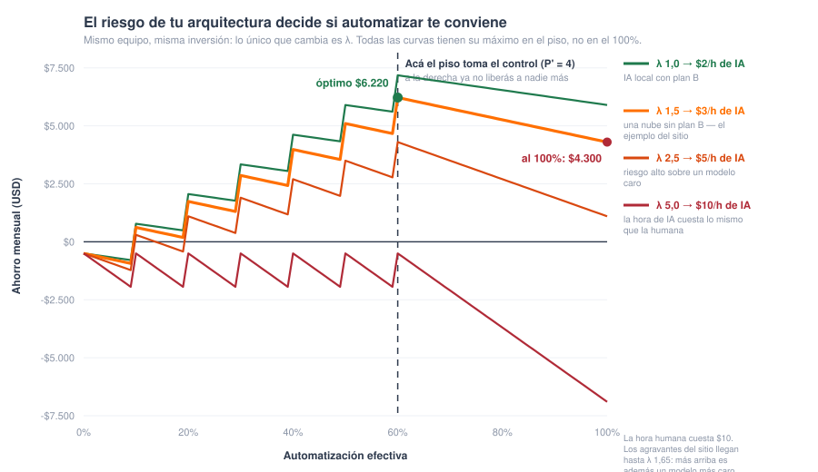

Calculá tu dotación mínima de continuidad y tu Índice de Dependencia de IA (IDA). Cargá los números de tu empresa y obtené el resultado al instante.
Mové los valores y mirá cómo cambian tus resultados. Todo se calcula en tu navegador; nada se envía a ningún lado.
Este es el error más caro del modelo. Si por contrato o por normativa tenés que tener 2 personas siempre presentes, eso no son 2 personas: son 2 puestos que hay que cubrir durante todas las horas que abre la operación, y eso se paga con más gente.
La idea no es acertar el número exacto: es no olvidarte de ningún costo. Varios pueden dar cero —si ya los tenés cubiertos— pero conviene mirarlos uno por uno antes de descartarlos.
Cargá lo que sí sabés o podés cotizar: el precio de tu modelo y cuánto pensás gastar al mes. Las horas automatizadas ya las tiene el modelo, así que el costo por hora sale solo.
Por qué se pregunta por mes y no por hora. Un modelo caro suele necesitar menos tokens para la misma tarea, y uno barato más. Preguntarte "cuántos tokens por hora" te obligaría a adivinar esa compensación; preguntarte el gasto mensual la incluye sola. Además, "una hora de trabajo" no es una hora de la persona completa —esa tiene reuniones, llamados y mil cosas que la IA no hace—: son las horas que ya contaste como automatizables arriba.
Definen tu multiplicador de riesgo: arranca en 1,00 y sube con cada casillero.
Dónde corre la IA (elegí una):
Agravantes (marcá los que apliquen):
No es un documento en un cajón. Un plan de contingencia real tiene cuatro cosas, y si te falta alguna, marcá la casilla:
1 · El procedimiento manual escrito. Paso a paso de cómo se hacía el trabajo antes de la IA: qué sistema se abre, qué se controla, a quién se le avisa. Si el único que sabe es "el que estuvo desde el principio", no hay plan.
2 · Gente entrenada de verdad, no en la lista. Acá está lo importante: no alcanza con tener las personas. Si hace ocho meses que la IA hace todo y ellos solo revisan salidas, perdieron la práctica. El día que la IA no esté no van a poder arrancar, y encima van a tener que rehacer la curva de aprendizaje bajo presión, con el negocio parado.
3 · Simulacros periódicos. La forma de resolver lo anterior: una vez por trimestre, apagás la IA a propósito unas horas y operás a mano. Igual que un simulacro de incendio. Es la única manera de saber si tu piso de continuidad existe o es un número en una planilla. Cuesta horas, y esas horas son parte del seguro.
4 · Un segundo camino técnico probado. Otro proveedor con las credenciales ya cargadas y testeadas, o un modelo más chico corriendo local que aguante lo crítico. Probado: si nunca lo encendiste, no cuenta.
El error más común es tener el punto 1 y creer que alcanza. Un procedimiento que nadie ejecutó en un año no es un plan: es un papel. Si estás en esa situación, dejá la casilla marcada — tu riesgo es real.
Los resultados se actualizan solos mientras movés los valores. El botón Calcular te lleva al resultado, útil desde el celular.
Antes de confiar en una calculadora nueva, la pregunta correcta es: ¿por qué no existía? Alrededor de la IA hay muchísimo software de retorno, de riesgo y de cumplimiento. Lo honesto es mostrar qué hace cada categoría, qué pregunta no contesta, y dónde queda el hueco que este modelo intenta llenar.
| Qué hay hoy | Qué resuelve bien | La pregunta que no contesta |
|---|---|---|
| Calculadoras de ROI de IA | Cuánto ahorrás automatizando: horas por costo, payback simple. | Asumen riesgo cero y continuidad gratis. Te dicen a cuánta gente podés bajar; nunca cuánta tenés que conservar. |
| Índices académicos de dependencia de IA | Miden cuánto depende de la IA una economía o un sector, a nivel macro. | No bajan al gerente: no te dicen cuántas personas necesita tu área el lunes si el proveedor no responde. |
| Normas de gestión (ISO/IEC 42001, ISO 22301) | Te exigen plan de contingencia y evaluación de riesgos: definen el qué. | Son marcos, no calculadoras: piden el plan pero no dan el número — ni la dotación mínima, ni el costo del riesgo, ni el tope de inversión. |
| Plataformas de riesgo y seguridad de IA | Protegen el software: prompts maliciosos, fuga de datos, sesgos, cumplimiento. | Cuidan a la IA de que la ataquen. No cuidan a tu operación de quedarse sin IA. |
| Plataformas de IAOps y GRC corporativo | Operan en producción: monitorean, desvían tráfico entre proveedores y ejecutan el failover en tiempo real sobre datos reales. | Te dicen cómo reaccionar cuando falla. No te dicen si convenía invertir ni cuánta gente conservar — y llegan después de la decisión que este modelo ayuda a tomar. |
La última fila merece una aclaración, porque es donde más se confunde: este modelo no compite con esas plataformas, va antes. Ellas ejecutan la mitigación; el modelo te dice cuánto vale la pena gastar en ellas. Un failover automático entre nubes es exactamente lo que baja tu λ — y el modelo es lo que te permite defender ese gasto ante finanzas con un número.
Cada pieza existe por separado. Lo que no existía es la unión: personas + arquitectura técnica + riesgo de negocio en una sola cuenta que se pueda auditar.
Se despide con el Excel del ROI. La dotación queda por debajo del piso de continuidad y nadie lo sabe, porque el piso nunca se calculó. Se descubre el día de la primera caída — como en el apagón global de CrowdStrike, cuando el "plan manual" de muchas empresas resultó no tener gente suficiente que supiera ejecutarlo.
El plan de contingencia se escribe sin número. La norma exige "volver a operación manual", y el documento lo promete — con una dotación que ya no alcanza para operar manualmente. El papel cumple; la operación no.
El directorio no tiene métrica de exposición. Se discute cuánto ahorra la IA — nunca cuán rehén queda la empresa del proveedor. Sin un número comparable entre áreas y entre empresas, la dependencia no entra en la agenda hasta que se corta.
La inversión se aprueba con el escenario promedio. "Recuperás en 20 meses" suena a plan. Corrido 10.000 veces con rangos realistas, solo el 26% de los futuros recupera en menos de 18 — eso es una apuesta, y conviene saberlo antes de firmar.
| Diferencia | Por qué importa |
|---|---|
| Cuantifica la dotación mínima de continuidad (P') | Ningún software de RRHH ni de ROI te calcula el piso humano. Este modelo te dice "automatizá, pero tu piso de supervivencia son 4 personas; abajo de eso, el día que falle el proveedor no operás". |
| Traduce la fragilidad de arquitectura a plata (λ) | Una sola nube sin plan B deja de ser una observación técnica y pasa a ser un costo económico directo que castiga el ahorro y sube el IDA. |
| Es preventivo y probabilístico | Avisa antes de la caída, no después. Y el Montecarlo reporta los porcentajes sobre las 10.000 corridas completas — incluyendo los escenarios donde el proyecto no cierra, que serían fáciles de esconder. |
El benchmark honesto incluye los huecos propios. Los coeficientes de λ (+30% una sola nube, +20% sin plan de contingencia, +15% datos sensibles afuera) salen de criterio experto e incidentes públicos, no de un dataset calibrado por sector: son un punto de partida razonable, no una verdad revelada. Y el modelo todavía no publica casos reales con métricas de antes y después. Las dos cosas están en la hoja de ruta; mientras tanto, todas las fórmulas están a la vista y la cuenta corre entera en tu navegador — podés desafiarla con tus propios números.
La mayoría lo abre una vez y se va. Pero el mismo modelo sirve en tres momentos, y en cada uno se carga distinto:
| Modo | Cuándo | Qué datos usás | Qué te llevás |
|---|---|---|---|
| Diagnóstico 2 minutos | La primera vez, o en una reunión, para ver si el tema existe. | Números a ojo, los que te acordás. | Una primera alerta: si tu piso ya supera tu dotación, hay un problema hoy. |
| Decisión | Antes de aprobar una inversión o un recorte. | Datos reales de nómina, horas y factura de IA. Montecarlo con tus rangos. | El techo de inversión, la dotación a conservar y el IDA — con el CSV para que finanzas lo audite. |
| Auditoría trimestral | Después, como control recurrente. | Los mismos datos, actualizados. | Si el IDA se movió. Automatizaste más, cambió el proveedor, se fue gente: el índice se corre y nadie lo nota sin medirlo. |
Volvé a la Calculadora para correr tu caso, o seguí en Cómo funciona para ver la lógica desde cero.
Hoy un call center se puede automatizar al 100% con IA. Técnicamente no queda ninguna tarea que un agente no pueda hacer —leer un email, responder por voz, por WhatsApp, contestar mensajes en redes sociales—: atender, resolver, escalar, registrar. La pregunta ya no es "¿se puede?".
La pregunta es otra: ¿qué pasa si de un día para otro no podés usar IA?
Puede pasar por muchos caminos: se cae el proveedor de nube, el modelo que usás se discontinúa, el precio cambia 10 veces, una regulación nueva te prohíbe procesar datos afuera del país, o te cortan el servicio por una disputa comercial.
Y acá está el punto ciego: cuando una empresa automatiza, calcula cuánta gente puede reducir. Nadie calcula cuánta gente tiene que conservar. Son dos números distintos, y el segundo es el que te salva.
Los marcos que existen hoy —las normas de continuidad de negocio como ISO 22301, la nueva ISO/IEC 42001 de gestión de IA, los análisis de impacto y los mapas de dependencia— te ayudan a identificar el problema. Lo que no te dan es el número: cuántas personas, cuánta inversión tiene sentido, cuán expuesto estás. Este modelo propone esa cuenta.
Aplica a cualquier industria, aunque pega distinto según la criticidad. Para un call center, si la IA se cae perdés ventas. Para un retail, góndolas vacías en fecha pico. Para un banco, es un evento regulatorio. Para una transportadora de gas, es un problema de seguridad pública. Mismo modelo, distinta severidad.
El Índice de Dependencia de IA es un número de 0 a 100 que resume cuán expuesta está tu operación si la IA deja de estar disponible. Combina dos cosas: cuánto automatizaste y cuán frágil es la arquitectura que lo sostiene.
IDA cerca de 0: casi no automatizaste, o lo hiciste con arquitectura robusta (IA local, multi-cloud, contingencia). Si la IA se cae, es una molestia menor.
IDA cerca de 100: automatizaste mucho sobre una arquitectura frágil (una sola nube, sin plan B). Si la IA se cae, tu operación se cae con ella.
| Pregunta | Módulo |
|---|---|
| ¿Cuánto cuesta la hora humana? | Humano |
| ¿Cuánto puedo automatizar de verdad? | Automatización |
| ¿Cuánto me cuesta el riesgo de mi arquitectura? | Riesgo |
| ¿Cuál es mi piso para sobrevivir sin IA? | Continuidad |
Seguí en Fórmulas para ver la cuenta completa paso a paso, o pasá a Casos extremos para entenderla con ejemplos.
Los datos que cargás en la calculadora pasan por cuatro módulos, y de ahí salen las tres respuestas del modelo. Hacé clic en cada módulo para ver qué datos usa, qué produce y a qué resultado alimenta.
Los ejemplos numéricos que siguen usan los valores que trae la calculadora por defecto: 10 personas, 160 h cada una, nómina $16.000, 60% automatizable, 20% con firma humana, 80% de eficiencia, una sola nube sin plan de contingencia, 640 h mínimas, inversión $50.000 y mantenimiento $500 por mes.
N = nómina mensual total en USD del área (sueldos con cargas). H = horas humanas totales del área al mes, que sale de multiplicar personas por horas de cada una. C_h es lo que te cuesta una hora de trabajo humano: la vara contra la que se compara la IA.
a = % de las horas del área que técnicamente puede hacer la IA. r = % de esas horas que exige firma humana obligatoria (médico, escribano, auditor): la IA no las reemplaza aunque técnicamente pudiera hacer la tarea. η (eta) = eficiencia real de la IA frente a una persona; nunca 100%, siempre hay reprocesos y supervisión. a_ef es la automatización efectiva: el % de horas que realmente sacás de la carga humana.
| Decisión de arquitectura | ρ |
|---|---|
| Una sola nube | +0,30 |
| Multi-cloud (2+ proveedores) | +0,10 |
| IA local (en tus servidores) | +0,02 |
| Sin plan de contingencia | +0,20 |
| Datos sensibles en nube externa | +0,15 |
ρ (rho) son primas de riesgo: cada casillero que marcás suma la suya. λ (lambda) arranca en 1 —sin riesgo— y crece con cada fragilidad. No es plata que pagás todos los meses: es el costo esperado del día que se cae. Por eso el modelo lo cobra como un recargo sobre la factura de IA.
H_min = horas de trabajo que necesitás al mes para sostener solo lo crítico si la IA no está: no toda tu operación, la parte que no puede parar. h_persona = horas que trabaja una persona al mes. El símbolo ⌈ ⌉ es "redondeo hacia arriba": si da 3,2 personas, son 4, porque no existe media persona.
El piso P_min mira solo hacia adentro del área. Pero una operación de 5 personas dentro de una empresa donde otras 20 saben hacer esa misma tarea no está tan expuesta como un call center de 200 donde nadie más sabe. R es esa gente: las personas de fuera del área que podrían cubrir la operación crítica el día que la IA no esté.
La aclaración del P_min = 0 no es un tecnicismo: si declarás que no tenés operación crítica —que si la IA se cae, no pasa nada urgente—, entonces no hay piso que cubrir y el respaldo externo no tiene nada que descontar. La cobertura vale 0 y el IDA queda sin tocar. Sin esa aclaración la fórmula dividiría por cero.
Acá no aparece ninguna variable nueva. Los tres resultados son los cuatro números de arriba, combinados. Cada término va pintado con el color del módulo del que viene:
Se alimenta de: Automatización Continuidad
Esta fórmula hace dos cuentas distintas y se queda con la más grande. Paso a paso:
¿Por qué la más grande y no la más chica? Porque las dos son condiciones que tenés que cumplir al mismo tiempo: necesitás al menos 7 para hacer el trabajo del día a día, y al menos 4 para sobrevivir sin IA. El número que las cumple a las dos es el mayor. Quedarte con el menor te dejaría incumpliendo una.
En este ejemplo manda la economía y el piso ni se activa. Pero mirá qué pasa si automatizás más: con a_ef del 90%, la cuenta económica da ⌈10 × 0,10⌉ = 1 persona, y entonces max(1 , 4) = 4. Ahí el piso toma el control y te frena: por más que automatices el 100%, nunca vas a bajar de 4. Esas 3 personas de diferencia entre lo que dice el Excel y lo que dice el piso son tu prima de seguro operativo.
Se alimenta de: Humano Automatización Riesgo y del Resultado 1
S es el ahorro mensual en dólares. Fijate que arranca con P', el resultado anterior: solo ahorrás el sueldo de la gente que efectivamente podés liberar. Paso a paso:
Una aclaración honesta sobre λ: S es el ahorro ajustado por riesgo, no el flujo de caja contable. λ no es un cheque que le firmás a tu proveedor todos los meses: es una prima de riesgo implícita que el modelo cobra para castigar arquitecturas frágiles al momento de decidir. Tu contador va a ver un ahorro mayor —el mismo número con λ=1—; tu director de riesgo va a querer ver este.
Se alimenta de: Automatización Riesgo Continuidad — nunca dinero
IDA = 0,384 × 1,50 × (1 − 0 × 0,7) × 100 = 58 → zona amarilla, vigilancia. En el ejemplo no hay respaldo externo declarado (R = 0), así que el tercer factor vale 1 y no cambia nada.
El min( , 100) no es decorativo: con automatización alta y arquitectura muy frágil el producto se pasa de 100 (el techo teórico es 165: a_ef=1 con λ máximo de 1,65 — una sola nube, sin plan de contingencia y datos sensibles afuera). Cualquier valor por encima de 100 ya es "máxima dependencia posible", así que el índice se topea ahí para que la escala 0–100 signifique siempre lo mismo.
Por qué el IDA no incluye la plata. Es la pregunta más común y es deliberado: ahorrar y estar expuesto son cosas distintas. Podés tener un proyecto que ahorra bien y recupera rápido —excelente negocio— y al mismo tiempo estar en zona amarilla de dependencia. Si metieras el dinero adentro del IDA, un ahorro grande te "taparía" el riesgo y el índice te diría que estás bien justo cuando más frágil estás. Por eso el IDA mide solo dos cosas: cuánto delegaste (a_ef) por cuán frágil es lo que lo sostiene (λ). El dinero ya tiene su propia fórmula, que es S.
Comprobalo: dos empresas con la misma automatización del 38,4% pero distinta arquitectura → con una sola nube (λ=1,50) da IDA 58; con IA local (λ=1,02) da IDA 39. Mismo trabajo automatizado, mitad de exposición.
Todo proyecto de automatización tiene dos bolsillos distintos, y confundirlos es el error más caro que se puede cometer con este modelo. Uno se paga una sola vez; el otro, todos los meses de tu vida.
| Inversión (I) — una sola vez | Costo operativo — todos los meses |
|---|---|
| Honorarios de proveedor o consultora Horas de tus propios programadores Integración con tus sistemas actuales Migración y limpieza de datos Licencias iniciales Horas de tu propia gente definiendo reglas y revisando salidas Hardware, solo si lo comprás |
Tokens / API, o alquiler del servidor (C_mes) Electricidad y conectividad Sysadmin o servicio gestionado Mantenimiento y ajustes del software (M) Reentrenamiento cuando cambia el modelo Monitoreo y auditoría de salidas |
Las dos líneas en negrita de la izquierda son las que todo presupuesto olvida: las horas internas no son gratis por ser internas. Entre definir reglas, revisar salidas y capacitar, tu propio equipo suele representar entre el 20% y el 30% de la inversión real. Si las contás en cero, el payback que te da el modelo es ficción.
Y una aclaración que evita doble conteo: si el servidor lo alquilás, es costo operativo y va dentro de C_mes. Si lo comprás, es inversión y va en I. Nunca en los dos lados.
Esto sorprende a casi todos. La inversión no aparece en ninguna fórmula de los cuatro módulos. Solo aparece al final, en una división: T = I ÷ S. Mirá qué pasa si la cambio y dejo absolutamente todo lo demás igual:
| Inversión | Ahorro mensual | IDA | Recupero |
|---|---|---|---|
| $25.000 | $2.457 | 58 | 10 meses ✓ |
| $50.000 | $2.457 | 58 | 20 meses ✕ |
| $100.000 | $2.457 | 58 | 41 meses ✕ |
| $200.000 | $2.457 | 58 | 81 meses ✕ |
El ahorro no se mueve. El IDA no se mueve. Lo único que se mueve es el recupero. Y está bien que sea así: los $50.000 son un gasto de una sola vez, no cambian cuánta plata te entra por mes ni cuán dependiente quedás de tu proveedor. Cambian solamente cuánto tardás en devolver lo que pusiste.
El modelo te pide el gasto mensual de IA porque es el número que realmente conocés: sale de tu factura o de una proyección. Con eso calcula solo el costo por hora automatizada, que es lo que necesitan los gráficos.
Pero ojo con lo que ese número esconde: con API el gasto sube y baja con el uso —si automatizás menos, pagás menos—; con servidor propio el gasto es fijo y no baja aunque no lo uses.
Dicho en criollo: con API el costo es una diagonal que sube con el uso; con local es una recta horizontal que no baja nunca. Por eso, si corrés local y después automatizás menos de lo previsto, tu costo por hora se dispara sin que hayas cambiado nada del contrato.
Y acá está la parte que casi nadie presupuesta. Correr IA en tus servidores no es solo el fierro:
| Concepto | Costo mensual |
|---|---|
| Alquiler 2× H200, 24/7 | $5.170 |
| Electricidad (~2,1 kW constantes) | $250 |
| SysAdmin / MLOps que lo mantenga | $3.000 |
| Total real | $8.420 |
Para el proyecto de 10 personas del ejemplo, la diferencia es terminante: con API DeepSeek el ahorro es $4.168/mes y recupera en 12 meses; con servidor propio contando todo, el ahorro es −$4.288/mes y no recupera nunca. Misma tarea, misma automatización, misma gente. Las dos cifras están calculadas con el mismo λ (1,02) a propósito: así la comparación aísla el costo y no mezcla el riesgo. Si a la API le cargaras su λ real de nube única (1,50), su ahorro sería $4.106 — la conclusión no se mueve.
Si reemplazás cada módulo por su definición, cada resultado queda expresado directamente en función de los datos que cargás, sin pasos intermedios. Son las mismas cuentas de arriba, escritas de corrido:
Personas a conservar
Ahorro mensual — el P' de arriba entra entero adentro, por eso es la más larga:
Se lee en dos mitades: los sueldos que dejás de pagar, menos lo que te cuesta la IA ajustada por riesgo, menos mantenimiento. Con los números del ejemplo: [10 − max(7, 4)] × 1.600 − 1.600 × 0,384 × 1,5 × 2 − 500 = 4.800 − 1.843 − 500 = $2.457.
Índice de Dependencia
Con ⌈H_min ÷ h_p⌉ = 0 —sin operación crítica que sostener— el término de cobertura vale 0 y el IDA queda min(a_ef · λ · 100, 100).
¿Y una sola mega fórmula que junte los tres resultados? No, y no por falta de ganas: vienen en unidades distintas —personas, dólares por mes y un índice de 0 a 100—. Sumarlos daría un número sin significado. Pero sí hay un orden obligatorio: P' se calcula primero porque S depende de él. Esa dependencia es lo que hace honesto al modelo — es la que le cobra a la empresa el costo de su propio piso de continuidad.
Las tres respuestas, juntas, son la decisión completa: P' te dice con cuánta gente te quedás, S y T si el proyecto se paga, y el IDA cuán expuesto quedás después de hacerlo. Un proyecto puede aprobar las dos primeras y reprobar la tercera: ahí es donde el modelo gana su sueldo.
Elegí qué querés ver y mové los controles. La curva se recalcula en vivo para que entiendas cómo cada variable cambia el resultado.
La cuenta ingenua dice cero personas. El modelo dice no: la dotación cae hasta chocar con un piso —el mínimo para operar sin IA— y ahí se planta. La diferencia es tu prima de seguro operativo.
Dos empresas automatizan lo mismo y pagan lo mismo en la factura. La que corre sobre una sola nube "maneja sin seguro": el riesgo aparece todo junto el día del choque. Si λ sube tanto que el costo real de la IA alcanza al humano, dejás de ahorrar; si lo supera, pagás por automatizar.

Fijate que las cuatro curvas tienen su máximo en el mismo lugar: el 60%, donde el piso toma el control. λ no mueve el óptimo, mueve cuánto ganás en ese óptimo — y con la hora de IA al precio de la hora humana, la curva se hunde y automatizar te cuesta plata.
Correr un modelo abierto en tus servidores casi elimina el riesgo (λ ≈ 1), pero el servidor 2× H200 cuesta ~$5.170/mes fijo. Para automatizar emails de 60 h/mes, la API de DeepSeek sale ~$12,60/mes: el local cuesta 410× más. La misma tarea con Gemini 3.6 Flash sale ~$270/mes (21× más caro que DeepSeek). Misma tarea, conclusiones opuestas.
El break-even del servidor propio está cerca de 24.600 millones de tokens/mes: unas 154 personas-equivalente operando full time sobre IA. Por debajo, la API gana. Por encima, el local gana y encima te baja λ al mínimo — decisivo para un banco o una empresa de salud donde la soberanía del dato vuelve irrelevante el cálculo de tokens.
Pero si contás el costo completo —fierro, luz y sysadmin— el punto de equilibrio se corre bastante más lejos:
| Qué contás | Costo fijo/mes | Break-even | Equivale a |
|---|---|---|---|
| Solo el servidor | $5.170 | 24.600 millones de tokens | 154 personas |
| Servidor + luz + sysadmin | $8.420 | 40.100 millones de tokens | 251 personas |
Dicho de otro modo: el servidor propio no se justifica por moda ni por miedo. Se justifica cuando tu volumen supera ese piso o cuando la criticidad del dato hace que λ importe más que el costo. Si no llegás a esa escala pero necesitás soberanía del dato, la salida intermedia es un servicio gestionado tercerizado: el sysadmin es problema del proveedor y entra como cuota mensual previsible.
Precios reales verificados en agosto 2026. Decí cuántas horas de trabajo al mes vas a automatizar y mirá qué opción conviene. Se asume ~1 millón de tokens por hora de trabajo equivalente.
| Modelo | Input /1M | Output /1M | ≈ Costo/hora* |
|---|---|---|---|
| DeepSeek V4-Flash (API) | $0,14 | $0,28 | $0,21 |
| DeepSeek V4-Pro (API) | $0,435 | $0,87 | $0,65 |
| Gemini 3.6 Flash (API) | $1,50 | $7,50 | $4,50 |
| Gemini 3.1 Pro (API) | $2,00 | $12,00 | $7,00 |
| DeepSeek V4-Flash local (2× H200) | ~$5.170/mes fijo solo el alquiler 24/7 · ~$8.420 con luz y sysadmin | — | |
*Costo/hora asumiendo 0,5M input + 0,5M output. Los modelos abiertos (DeepSeek, MIT) se pueden autohospedar; los de Google no. Verificá los precios vigentes antes de comprometer presupuesto — cambian seguido.
Por qué el local aparece con dos precios: el alquiler del servidor no es el costo completo. Sumale electricidad (~$250/mes) y sobre todo un sysadmin o servicio gestionado (~$3.000/mes), que es el costo que más proyectos de IA local hunde. Puede ser cero si ya tenés a alguien que lo absorbe — pero conviene evaluarlo, no asumirlo. El detalle está en Fórmulas → La plata, y en la Calculadora hay un asistente que te lo va pidiendo componente por componente.
Los números fijos mienten: el token cambió 10× en dos años y tu eficiencia real no la conocés hasta el tercer mes. Acá definís un rango para cada variable incierta y la simulación corre 10.000 veces tu proyecto con combinaciones al azar. Los datos firmes los toma de la calculadora; acá solo definís lo que no sabés con certeza. Corre en tu navegador — no gasta nada aunque lo usen miles de personas.
Si te llevás cuatro cosas de todo este modelo, que sean las cuatro primeras. Son contraintuitivas, aparecen recién cuando hacés la cuenta honesta, y van en contra de lo que hoy se recomienda en la mayoría de las presentaciones sobre IA: el óptimo de automatización, la arquitectura como palanca, los dos umbrales a partir de los cuales conviene comprar el fierro, y el techo de inversión — la única cifra del modelo que se lleva a una negociación.
Después vienen dos secciones más: cómo llevar el modelo a un canal físico —una caja de supermercado, una ventanilla de banco, una guardia 24/7—, que es donde más sirve; y los límites de todo esto, porque ningún modelo es honesto si no dice qué no hace.
La intuición dice que cuanto más automatices, más ahorrás. Es falso, y el modelo muestra exactamente dónde deja de ser cierto.
Acordate del piso de continuidad: hay una cantidad de gente que no podés soltar, por más que la IA haga su trabajo. Una vez que llegás a ese piso, cada punto adicional de automatización suma factura de IA pero ya no libera a nadie más. Seguís pagando los mismos sueldos y encima pagás más IA.
| Automatización efectiva | Lo que promete la cuenta ingenua | Ahorro real | Recupero | IDA |
|---|---|---|---|---|
| 60% — el óptimo | $6.220 | $6.220 | 8 meses | 90 |
| 80% | $8.460 | $5.260 | 10 meses | 100 |
| 100% | $10.700 | $4.300 | 12 meses | 100 |
Leé la última fila con calma: al automatizar el 100%, la cuenta ingenua te promete $10.700 por mes y la realidad te da $4.300. Los $6.400 que faltan son los cuatro sueldos del piso de continuidad, que seguís pagando mientras la IA hace ese trabajo.
Podés ver esta curva en vivo en Explorar gráficos → Ahorro vs Riesgo (λ): la línea gris es la promesa ingenua, la naranja es lo que pasa de verdad, y se separan justo en el punto donde el piso empieza a morder. El punto verde marca tu óptimo.
Acá está la consecuencia práctica, y es la que puede cambiar una decisión de directorio.
Cuando el número no cierra, el reflejo de cualquier gerente es recortar más gente. La conclusión anterior ya nos dijo que eso no funciona: no podés bajar del piso, y automatizar más te empeora las dos cosas. Entonces, ¿qué queda?
Queda bajar λ, es decir, hacer más robusta la arquitectura. Mirá el mismo proyecto —misma gente, misma automatización, misma inversión— cambiando solamente dónde corre la IA y si tenés plan B:
| Arquitectura | λ | IDA | Ahorro | Recupero |
|---|---|---|---|---|
| Una sola nube, sin plan de contingencia | 1,50 | 58 | $2.457 | 20 meses ✕ |
| Una sola nube, con plan de contingencia | 1,30 | 50 | $2.703 | 19 meses ✕ |
| Multi-cloud, con plan de contingencia | 1,10 | 42 | $2.948 | 17 meses ✓ |
| IA local, con plan de contingencia | 1,02 | 39 | $3.047 | 16 meses ✓ |
No cambió nada del negocio entre la primera fila y la última. No se automatizó más, no se despidió a nadie extra, no se negoció un mejor precio de tokens. Lo único que cambió es dónde vive la IA y si hay plan B. Con eso solo, el proyecto pasa de reprobar (20 meses) a aprobar, y el IDA cae de 58 a 39.
La conclusión anterior dice que bajes λ, y la IA local es la que más lo baja. Pero recién vimos que para una empresa de 10 personas el servidor propio da −$4.288 por mes. ¿Entonces IA local nunca sirve? No: sirve a partir de cierta escala, y el modelo permite calcular exactamente cuál. Lo interesante es que no hay un umbral, hay dos, y contestan preguntas distintas.
El servidor cuesta $8.420 por mes fijo (con luz y sysadmin), uses 2 horas o 2.000. Ese costo no se mueve, así que la única pregunta es cuántos sueldos liberás contra él:
| Personas que liberás | Ahorro mensual con servidor propio | |
|---|---|---|
| 3 (el ejemplo de 10 personas) | −$4.288 | ✕ pérdida |
| 5 | −$1.088 | ✕ pérdida |
| 6 | +$512 | ✓ punto de quiebre |
| 10 | +$6.912 | ✓ |
| 20 | +$22.912 | ✓ |
Por debajo de ~6 personas liberadas, comprar el fierro es pérdida segura, no importa lo que hagas con el resto de las variables: el costo fijo se come todo el ahorro. Por eso automatizar 2 horas de trabajo con servidor propio es un disparate, y automatizar el trabajo de 20 personas es un buen negocio. La misma máquina, el mismo precio.
Acá está lo que sorprende. Que el servidor deje de dar pérdida no significa que convenga: primero tiene que ganarle a la alternativa de alquilar. Y ese umbral depende por completo de qué API estarías usando si no comprases:
| Si tu alternativa fuera… | Costo por hora automatizada | Local conviene a partir de |
|---|---|---|
| API DeepSeek V4-Flash (el más barato) | $0,21 | 40.100 h/mes = 251 personas-equivalente |
| API Gemini 3.6 Flash (20× más caro) | $4,50 | 1.871 h/mes = 12 personas-equivalente |
Mismo servidor, mismo precio, y el umbral se movió 20 veces — de 251 personas a 12. Lo único que cambió es contra qué lo comparás. Por eso la pregunta "¿me conviene IA local?" está mal formulada si no decís contra qué y a qué escala.
Todo el modelo se usa para decidir, y hay una sola cuenta que se puede llevar a una reunión con un proveedor. No es el IDA ni el ahorro: es el techo de inversión.
La fórmula del recupero es T = I ÷ S. Despejada al revés, con el límite de 18 meses que propone el modelo, queda:
En el ejemplo del sitio, con un ahorro de $2.457 por mes, el techo es $44.222. Y la inversión que se estaba evaluando era de $50.000. Ahí está la razón exacta por la que el proyecto no cierra, y expresada de la forma más accionable posible: no "el payback da 20 meses", sino "este proyecto vale $44.222, no $50.000".
Todo lo de arriba usa números fijos. La realidad no los tiene: el precio del token cambió 10 veces en dos años y tu eficiencia real no la vas a conocer hasta el tercer mes.
Cuando corrés este mismo proyecto 10.000 veces con rangos en lugar de valores exactos (pestaña Montecarlo), el resultado deja de ser una promesa y pasa a ser una probabilidad: solo el 26% de los escenarios recupera la inversión en menos de 18 meses, con una mediana de 22 meses entre los que sí recuperan (y un 7% que directamente no recupera nunca o tarda más de 60 meses).
Ese 26% es incómodo, y por eso vale la pena mirarlo: dice que con esos rangos el proyecto es más una apuesta que un plan. Y otra vez, la palanca para moverlo no es automatizar más — es bajar λ o bajar la inversión inicial.
El modelo se explica con horas de oficina, pero donde más falta hace es donde hay puestos físicos de atención: una caja de supermercado, una ventanilla de banco, una guardia de gas. La buena noticia es que las cuatro variables se traducen casi solas.
| Variable | Qué es en una caja de supermercado |
|---|---|
| a | % de transacciones que la caja automática puede procesar sola |
| r | Las que exigen humano sí o sí: verificación de edad (alcohol, tabaco), devoluciones, productos sin código, asistencia por accesibilidad |
| η | Eficiencia real — el autoservicio es más lento que un cajero entrenado y genera más merma por errores y hurto |
| λ | Si se cae el software de punto de venta o el proveedor, ¿podés seguir vendiendo? |
| P_min | Cuántas cajas con persona necesitás para sostener la venta en hora pico si el autoservicio no funciona |
| Variable | Qué es en una sucursal |
|---|---|
| a | % de operaciones que se resuelven por cajero automático o app |
| r | Apertura de cuenta con verificación presencial, reclamos, efectivo sobre umbrales, y atención obligatoria por accesibilidad a personas mayores o con discapacidad |
| λ | Si se cae el core bancario o el proveedor de la app, ¿tenés ventanilla operativa? Para un banco esto no es comercial: es un evento regulatorio |
| P_min | Cuántas ventanillas humanas necesitás para no incumplir la normativa y sostener la operación crítica |
En banca el modelo funciona incluso mejor que en oficina, porque r deja de ser una estimación: no lo adivinás, lo leés de la normativa del regulador. Ese es el único parámetro del modelo que puede tener respaldo legal en lugar de criterio.
Acá casi todo el mundo se equivoca, y el error es grande. H_min se mide en horas de trabajo, no en puestos simultáneos.
Si alguien dice "necesito 3 cajas siempre abiertas" y carga H_min = 3 × 160 = 480 h, el modelo le devuelve 3 personas. Está mal por más del doble. ¿Por qué? Porque el local abre 360 horas al mes (12 h × 30 días) pero una persona trabaja 160. Tres puestos cubiertos durante 360 horas son 1.080 horas de trabajo, no 480.
| Canal | Horas de operación/mes | Factor | 3 puestos simultáneos = |
|---|---|---|---|
| Retail, 12 h × 30 días | 360 | 2,25 | 7 personas |
| Sucursal de banco, 8 h × 22 días | 176 | 1,10 | 4 personas |
| Guardia 24/7 (gas, energía, salud) | 720 | 4,50 | 14 personas |
Si tu demanda no es pareja —un pico de 3 horas y el resto tranquilo— calculá H_min sumando franja por franja: (puestos en pico × horas de pico + puestos fuera de pico × horas fuera de pico) × días. Y agregale un margen: nadie puede contratar a alguien para trabajar exactamente las tres horas del pico todos los días.
Ningún modelo es honesto si no dice qué no hace. Estos son los cuatro supuestos que este modelo da por ciertos y que en tu empresa pueden no serlo.
El piso de continuidad asume que esas personas pueden ejecutar el proceso manual el día que haga falta. Pero si hace ocho meses que la IA hace todo y ellos solo revisan, no van a poder. Son guardia pasiva, y la guardia pasiva se oxida.
El modelo te da la cantidad, no la capacidad. Mantenerla exige simulacros periódicos de operación manual —igual que un simulacro de incendio— y eso tiene un costo en horas que hoy no está en ninguna fórmula. Un P_min de papel no salva a nadie.
Se podría modelar y no está. Una versión futura podría pedirte cada cuánto hacés simulacros y penalizar la eficiencia de tu gente de contingencia con el tiempo, empujando el piso hacia arriba mes a mes sin simulacros. No está por decisión: el modelo ya arrastra coeficientes basados en criterio (ver límite 6) y agregar una tasa de degradación inventada sumaría precisión aparente, no confiabilidad. Prefiero que quede declarado como límite y no escondido dentro de una fórmula.
Relacionado con lo anterior pero distinto: no alcanza con tener gente disponible, tiene que quedar en la empresa quién sepa cómo se seguía trabajando antes. Si automatizaste y en el camino se fueron los que conocían el proceso viejo, el piso existe en la planilla y no en la realidad. La documentación del proceso manual es parte del seguro, no un trámite.
Y acá es donde este límite muerde más fuerte: en R, el respaldo externo. El piso P_min al menos habla de gente que está en el área todos los días. R habla de gente que supuestamente sabe hacer la tarea pero hace tiempo que no la hace —o que quizás nunca la hizo en esta versión del proceso—. El modelo no tiene forma de verificarlo: R es una declaración tuya, y es el único número del modelo que baja el riesgo en lugar de subirlo. Todos los demás castigan; este premia.
El modelo cuenta lo que dejás de gastar, nunca lo que podrías ganar de más. Para operaciones críticas eso es exactamente lo correcto: en una guardia de gas o de energía no hay ingreso que justificar — hay una obligación legal de tener gente disponible 24/7 por si pasa algo. El modelo está pensado justamente para calcular cuánta gente es esa.
Pero si tu caso es comercial y automatizar te genera ventas nuevas —atención a las 3 AM, más capacidad en hora pico—, ese ingreso no entra acá y hay que sumarlo por afuera. El modelo es deliberadamente conservador: te dice el piso de la decisión, no el techo.
La convivencia entre humano e IA sí está en el modelo, y vive en la variable r. Si de 1.000 horas hay 200 que necesitan la firma de un abogado, un ingeniero o un arquitecto, cargás r = 20% y el modelo entiende que esas 200 horas nunca se automatizan: la IA hace el trabajo, el profesional firma. Es convivencia estructural y permanente, y está bien representada.
Lo que el modelo no sabe representar es la degradación temporal: que la IA no se caiga del todo pero funcione peor durante dos semanas —más lenta, con más errores, con límite de consultas—. El modelo es binario: la IA está o no está. En la realidad, la falla más común es ese estado intermedio, donde tenés que poner gente a corregir sin haber perdido el servicio.
T = I ÷ S divide y listo: no descuenta el dinero en el tiempo. No hay tasa, no hay inflación, no hay costo de oportunidad. Un dólar del mes 20 vale lo mismo que uno de hoy. En finanzas esto se llama payback simple, y es distinto del VPN (valor presente neto) o la TIR que va a pedirte un CFO para aprobar la inversión.
Es deliberado: el payback simple se entiende sin explicación y sirve para descartar proyectos, que es lo que hace este modelo. Pero tiene un sesgo que conviene conocer — al no descontar, el recupero se ve mejor de lo que es. Si tu costo de capital es alto o operás en una economía con inflación en dólares, el recupero real es más largo que el que muestra la calculadora. Tratá los 18 meses como un filtro grueso, no como una aprobación financiera: para eso hay que llevar el ahorro mensual a una planilla de VPN con la tasa de tu empresa.
Los recargos de λ —+30% por nube única, +20% por no tener plan de contingencia, +15% por datos sensibles afuera— salen de experiencia profesional, no de un estudio estadístico. No hay detrás una base de incidentes con miles de casos: hay criterio, y conviene decirlo antes de que lo pregunte otro.
Lo que sí tienen es un orden defendible, que es lo que hace falta para decidir. Depender de un solo proveedor es la fragilidad más grave porque es la única que no tiene salida —si se cae, no hay a dónde ir—, y por eso pesa más que las otras dos. No tener plan de contingencia viene después: no te cae el servicio, pero te deja sin respuesta ensayada cuando cae. Y los datos sensibles afuera pesan menos en continuidad porque no interrumpen la operación: agregan exposición regulatoria y de reputación, que es un riesgo real pero de otra naturaleza.
Para calibrarlos de verdad haría falta lo mismo que usan las aseguradoras: una base de incidentes por sector con frecuencia, duración y costo de cada caída, y ajustar los coeficientes contra esos datos. Es el próximo paso natural del modelo y está pendiente. Mientras tanto, lo importante es que el orden de magnitud sirva para comparar dos arquitecturas entre sí — que es para lo que se usa λ en la práctica—, aunque el valor absoluto se pueda discutir.
Los agravantes de λ preguntan dónde corre la IA: una nube, varias, tus servidores. Eso cubre el riesgo de que se caiga la infraestructura. Pero en 2026 el riesgo ya no es solo ese: es que el modelo en sí cambie debajo tuyo.
Un proveedor de frontera puede degradar la calidad de una versión a otra sin avisar, cambiar sus políticas de uso o de privacidad, subir el precio de golpe, discontinuar el modelo sobre el que armaste todo, o quedar bloqueado comercialmente por una decisión geopolítica que no tiene nada que ver con vos. Nada de eso es una caída de infraestructura —el servicio sigue en línea— y sin embargo te rompe la operación igual. El modelo no lo mide.
Se podría agregar como un agravante más de λ, y probablemente sea el próximo. No está todavía por la misma razón que se explica en el límite 6: sumar un coeficiente nuevo sin poder calibrarlo agranda el modelo sin hacerlo más confiable. Mientras tanto, tratalo como un riesgo real y no contemplado: si tu operación depende de un solo modelo de un solo proveedor de frontera, tu exposición es mayor que la que te muestra el IDA.
Si todavía no las respondiste con números, volvé a la Calculadora y cargá los de tu empresa. Tarda dos minutos y no se envía nada a ningún lado.